The Exit option closes the GigaSpaces Management Center.
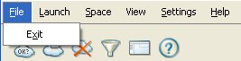
The Launch menu allows you to perform operations in the Deployments tab:
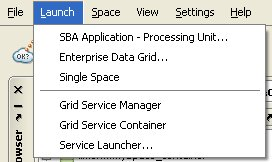
| Syntax | Description |
|---|---|
| SBA Application - Processing Unit | deploys a Processing Unit that includes spaces and other application services to the Service Grid. |
| Enterprise Data Grid | deploys a Data Grid in a specific space topology. |
| Single Space | deploys a single space in a local GSC. |
| Grid Service Manager | launches a local Grid Service Manager in the GMC. |
| Grid Service Container | launches a local Grid Service Container in the GMC. |
| Service Launcher | allows you to launch GSCs and GSMs and to define their properties. |
The Space menu provides options relevant for a specific space.
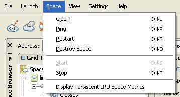
The Space menu is enabled only when pressing a space node in the tree on the left.
The Space menu allows you to:
| Syntax | Description |
|---|---|
| Clean a space | remove all entries from the space. |
| Ping a space | verifies that the space exists and is running correctly. |
| Restart a space. | |
| Destroy a space (Destroy Space). | |
| Start or stop a preexisting space | the Stop option is enabled when the selected space is in a started state, and the Start option is enabled when the selected space is in stopped state. |
| Display Persistent LRU Space Metrics | see the following section. |
When working with persistent spaces in LRU mode, this option turns on the instance count (a list or total of instances) in the relevant Spaces Network view row; and in the Classes view and Cluster view under the relevant space/cluster node.
This option is turned off by default, since displaying the instance count for such spaces might result in very high CPU usage.
Clicking Space > Display Persistent LRU Space Metrics turns on the instance count for all persistent LRU-mode spaces you are using. Clicking this option again turns off the instance count for these spaces.
The View menu provides the following options:
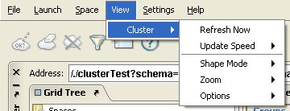
| Syntax | Description |
|---|---|
| Refresh Now | |
| Update Speed | choose the desired speed or provide a custom speed. |
| Shape Mode | allows you to define the shape of the graphical representation for clusters – oval or rectangle. |
| Zoom | allows you to zoom in or zoom out of the cluster view. |
| Options | the options below are related to the shapes representing the cluster members in the Cluster view. These options can be useful when wanting to reduce CPU usage. |
| Freeze all Members | stops updating all cluster member shapes. |
| Backward Replication | relevant for replicated cluster members, shows the direction of replication – an arrow is drawn from the replicating space to the replicated space. |
| Show Objects Count | stops showing the number of objects in each cluster member. If this options is used and one of the members is a persistent space in LRU mode, the Display Persistent LRU Space Metrics will not take affect. |
The Settings menu provides the following options:
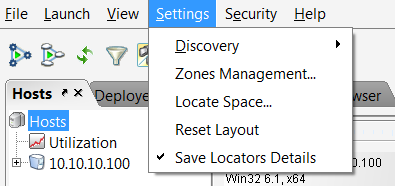
Discovery
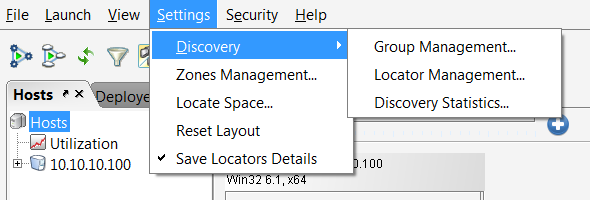
Group Management – opens the Discovery Group Selection window, allowing you to manage different Jini groups:
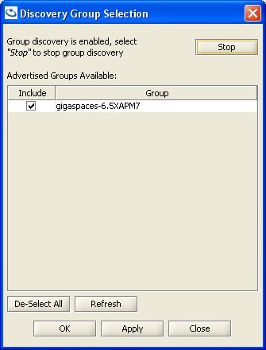
Selecting a Jini group defines which services (containers, spaces, GSCs, GSMs) are displayed in the GigaSpaces Management Center according to their Jini group. After updating, press Apply and then OK, or Close without saving.
Locator Discovery – allows you to find new locators using a port number. Type a port number in the first text box, and click Add. The port is then added to the managed set of locators at the bottom.
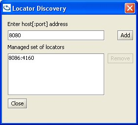
Discovery Stats – opens the Lookup Service Discovery Times window, which displays the locator IP address, its Jini group, and the time in [ms]:
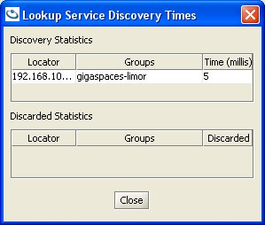
The System Properties option opens a window listing all configured system properties. The Configured System Properties window allows you to edit existing system properties, and add new properties.
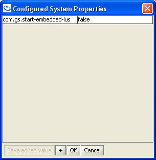
To edit an existing value, double click it, and type in your changes:
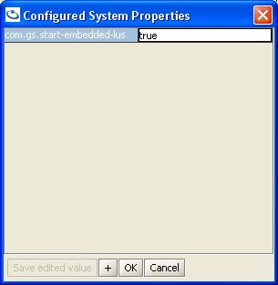
|| To add a new value, click the + button, which adds a new row. Type the property on the left side, and its value on the right side.|
Press OK to accept the changes and exit the window, or Cancel to exit without saving the changes.
The Help menu provides the following options
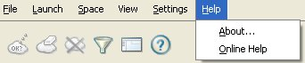
| Syntax | Description |
|---|---|
| About | provides product version information. |
| Online Help | opens the GigaSpaces Online Help homepage. |
The button toolbar allows you to perform maintenance operations on containers and spaces.
| Button | Description |
|---|---|
| Pings the selected space | |
| Cleans the selected space | |
| Destroys the selected space | |
| Opens the Discovery Group Selection window | |
| Resets all main window tabs, returns docking windows to their initial size and location. | |
| Opens the GigaSpaces Online Help homepage |
The Address bar allows you to specify either a space, container, or cluster address to view and manage. You can use a Jini or RMI address type. Typing your address and pressing Enter generates the relevant space or cluster node in the Grid Tree on the left.